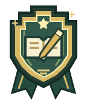

마지막 임무 · 내 약속 쓰기
가치몬과 함께
약속을 남겨요.
기억에 남는 가치몬을 고르고, 내가 할 일을 적어 주세요.
다 쓰면 내 글과 가치몬이 담긴 기록장을 받을 수 있어요.
01 AI 마을02 데이터 도시03 잿빛 황무지

AI 마을부터 황무지까지 함께한 가치몬
탐험을 마치며
탐험가의 약속
어떤 상황을 골라볼까요?
가치몬을 누르면 그 친구와 관련된 상황이 나와요.
교실에서 만날 수 있는 상황
그 선택을 한 이유는 무엇인가요?
왜 그렇게 하려는지, 영향을 받을 사람을 떠올리며 써 주세요.
예를 들어, 친구가 싫다고 말하면 어떻게 하겠어요?
다음에는 어떻게 하겠어요?
“조심할게요”보다 내가 할 행동을 써 주세요.
실명은 쓰지 않아도 돼요. 이 목업의 글은 서버로 보내지 않으며 새로고침하면 사라져요.
다음 수업에는 해본 일을 적어요.
다음 수업에 약속을 다시 열고 해봤어요 / 아직 기회가 없었어요 / 약속을 바꾸고 싶어요 중에서 고릅니다. 일어난 일과 다음 행동을 남기면 두 번째 배지를 받습니다. 실천하지 못한 이유도 돌아볼 자료로 남깁니다.
후속 회고는 이 목업에서 구현하지 않았습니다